文本与树：结构化编辑与代码可视化的得失和未来
不按年代流水账，而按“每一波押注了什么、得到了什么、失去了什么”来组织；用一张对比表把三十个系统放在同一把尺子上，归纳出八条规律，最后在 AI 背景下给出八个带可信度的判断。
先拆开问题“文本还是树”其实是四个问题
七十年来很多争论没有结论，是因为把四件事混在一起谈。视频开头先给出这把尺子，后面每个系统都按它定位、比较。
代码在磁盘上是什么：字符文本，还是语法树 / 数据库 / 哈希寻址的定义？
手的动作作用在什么上：字符与选区，还是节点与模板？
眼睛看到什么：等宽文本、积木、连线图、表格、3D 城市？
能不能在写的同时看到值、轨迹与变化？
例：Scratch 是“树存储 + 节点编辑 + 积木呈现”；paredit 是“文本存储 + 节点编辑 + 文本呈现”；gofmt / Prettier 是“文本存储，但文本只是语法树的一种标准投影”；Python Tutor 只做第 ④ 项。
正确性优先：语法制导编辑器
押注只要编辑器不让你写出非法程序，错误就会消失。
Emily（1971）、Interlisp、Mentor、Cornell Program Synthesizer（1978–81）、Gandalf、Synthesizer Generator（1984）、Centaur、Pan
- 得
教学场景表现好：Cornell Program Synthesizer 在康奈尔入门课中长期使用；属性文法、增量语义分析等技术留了下来。
- 失
职业程序员抵触。Waters 1982 年的文章标题就是结论：“程序编辑器不应抛弃面向文本的命令”。表达式级编辑像填表，改小地方要先拆再装。
- 留下
“编辑器理解语言”这件事本身被继承，后来以增量解析、语言服务的形式回归。
证据：Waters 1982 · Structure editor 词条
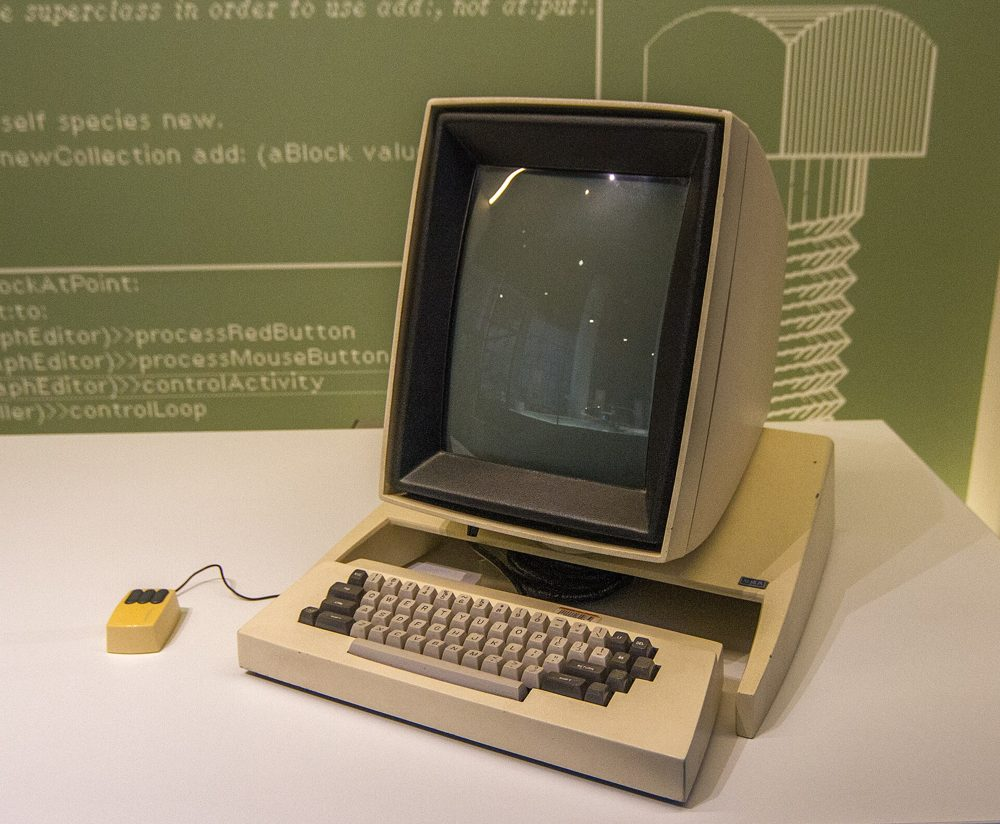
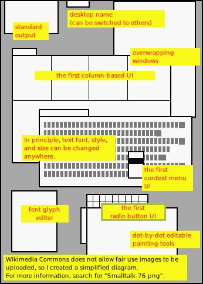
绕开文本：图形与数据流语言
押注图比字更直观，程序画出来就能看懂。
VisiCalc（1979）/ Excel、Pygmalion（1975）、Prograph、LabVIEW（1986）、HyperCard（1987）、Max（1988）/ Pure Data（1996）、Unreal 蓝图、Node-RED
- 得
在“本来就是信号流”的领域大获成功：测控、音频合成、游戏逻辑、物联网。用户往往不是职业程序员。最成功的一例常被忽略：电子表格——二维网格呈现、公式即时重算，是使用人数最多的“实时编程环境”；2020 年起 Excel 加入 LAMBDA，公式语言成为完整的函数式语言。
- 失
通用编程中输掉。可读性实验并未证明图形优于文本（Green、Petre 等 1990 年代的 LabVIEW 对比研究，待核原文数据）；规模一大就成“面条图”，即所谓 Deutsch 极限：一屏能放的图元远少于文本。
- 留下
“认知维度”框架（Green & Petre）成为评价一切编程界面的通用语言：粘滞度、隐藏依赖、过早承诺……
证据：认知维度 · CD 教程（Blackwell & Green）
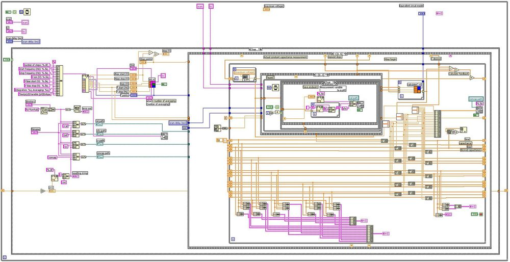
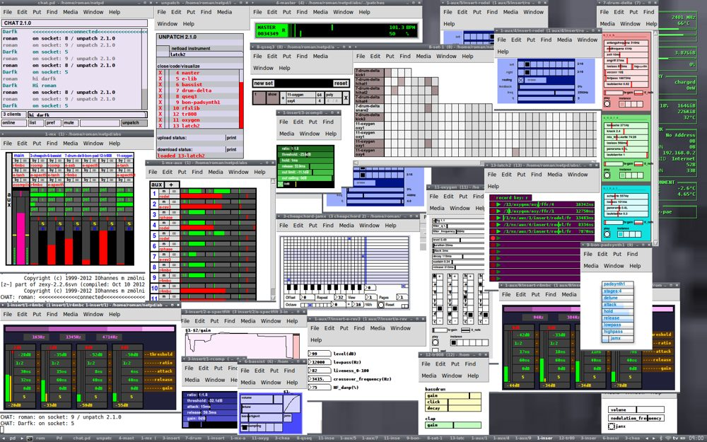
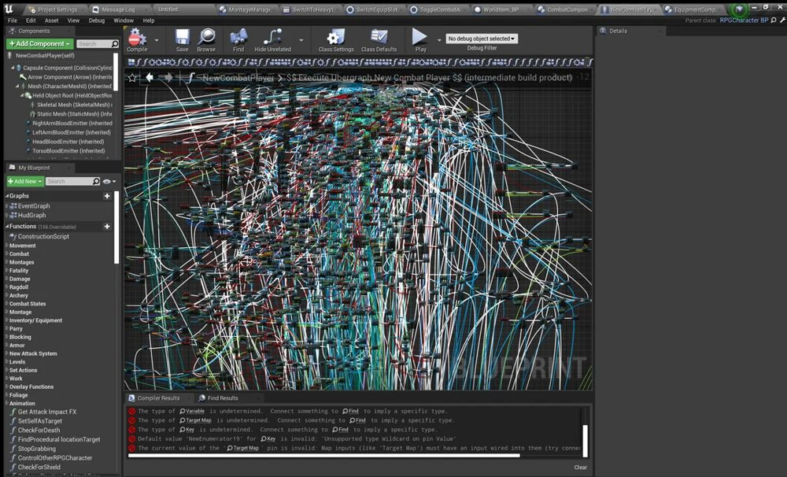
形状即语法：积木编程
押注让拼不上的东西拼不上，新手就不会被语法挡住。
Etoys、Alice、Scratch（2007）、App Inventor、Blockly（2012）、Snap!、MakeCode
- 得
结构化编辑影响最广的形态：数以千万计的学生，从未意识到自己在用“结构编辑器”。
- 失
红利不迁移。Weintrop & Wilensky（2019）对比两个高中班：积木班在第 5 周领先（66.6% 对 58.8%），转到 Java 后到第 15 周持平（64.9% 对 64.7%），自信心反而下降。
- 留下
积木成了“入口”，而不是“终点”；混合式、可双向切换的编辑器成为研究方向（Stride、Pencil Code）。
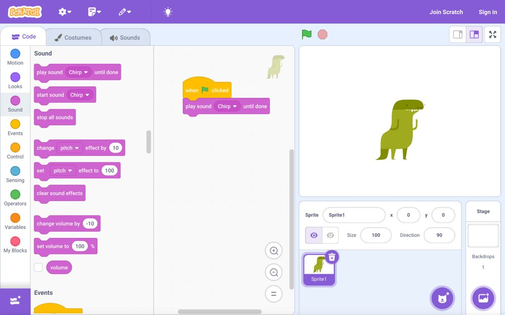
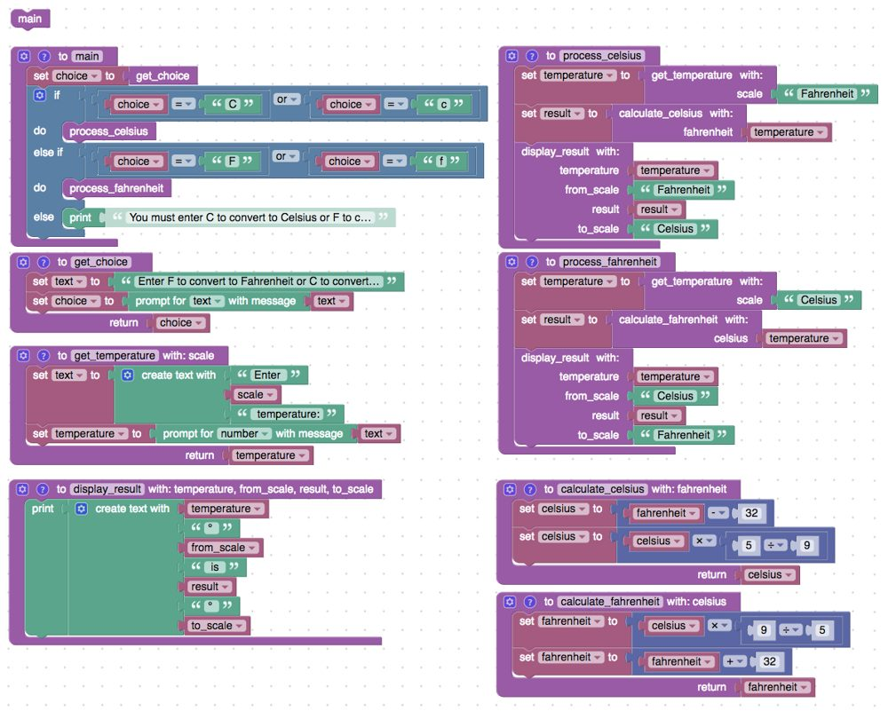
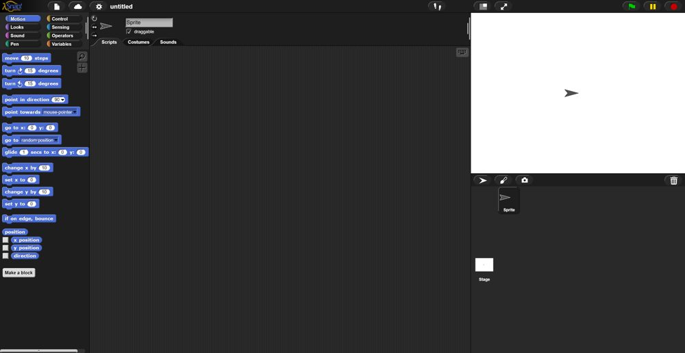
一模多视：投影式编辑与语言工作台
押注源代码是模型，文本、表格、公式、图只是它的投影；语言可以自由组合。
Intentional Programming（Simonyi，1990s–2017）、JetBrains MPS（2003–）、mbeddr、Lamdu、Unison、Darklang Classic（2017–2024）、Cirru / Calcit Editor（2012–2025，自动布局的树编辑器，按定义逐屏编辑、多端实时同步）及其 Canvas 实验 Hovenia Editor
- 得
Berger 等（FSE 2016）用 MPS 做对照实验：学生经 45 分钟培训，基础编辑速度与文本编辑器无显著差异；熟练用户在复杂任务上快约 2–3 倍，拼写错误更少，更多使用“移动”和重构。
- 失
同一实验：删除、选中“视觉上相邻但不是兄弟节点”的代码最痛苦，表达式级的非法插入更多。生态成本更致命：diff、版本控制、代码评审、搜索全要重做。Darklang 在 2024 年移除结构编辑器，称其占了半个代码库、bug 多，且“在代码生成的世界里活不下去”。
- 留下
在工业 DSL（嵌入式、保险、法规等）中有稳定用户；“格式化器 = 规范投影”的思想悄悄普及。
证据：Berger et al. FSE 2016 · Darklang 状态更新 · Petro & Porubän 2024 · calcit-lang/editor · Hovenia Editor

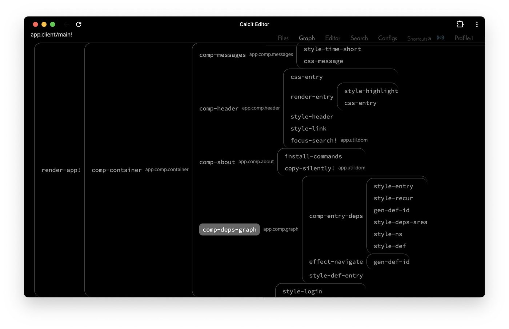
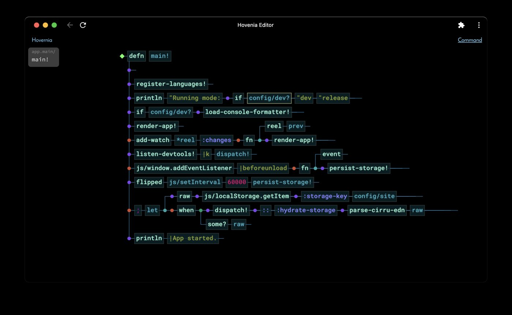
结构沉到文本底下
押注别换掉文本，在文本下面加一棵随时可用的树。
paredit（约 2005）、Coccinelle、gofmt（2009）/ Prettier（2017）、LSP（2016）、tree-sitter（2018）、Semgrep / ast-grep / Comby（结构化搜索与改写）、OpenRewrite（无损语义树，大规模重构）、difftastic（结构化 diff）、Mergiraf（2024，按语法树合并）、Cursorless
- 得
迄今最成功的一波：几乎每个现代编辑器都在后台维护语法树，“按结构选择、重命名、折叠、比较”成了日常，而用户仍觉得自己在编辑文本。
- 失
结构只是“辅助”，不能保证中间状态有意义；跨文件语义仍依赖重量级语言服务。
- 留下
研究前沿转向“像文本一样流畅的结构编辑”：Hazel 的类型洞（POPL 2017）、tylr、Pantograph（POPL 2025）。
证据：Hazelnut POPL 2017 · Pantograph POPL 2025 · 结构编辑器清单
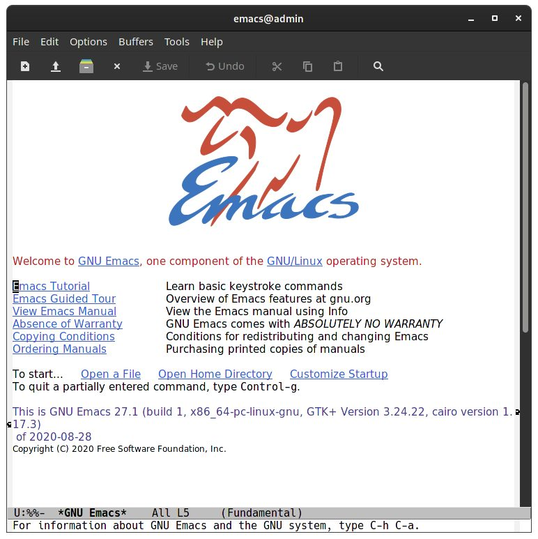
可视化的四次转向
可视化这条线也有自己的押注变化：从“画出结构”到“放映算法”，再到“俯瞰全局”和“看见运行”。
- 画结构1947–1997
流程图、Nassi–Shneiderman 图、UML。结局：设计文档里活着，代码里没人维护——图与代码不同步。
- 放映算法1981–2010
《Sorting Out Sorting》、BALSA、Tango、Python Tutor。结局：教学中长盛不衰，职业开发中少见。
- 俯瞰全局1991–2015
Treemap、SeeSoft、CodeCity、Gource。结局：论文多、演示惊艳、日常使用少。Merino 等综述 181 篇 SOFTVIS/VISSOFT 论文，约 62% 没有任何评估。
- 看见运行2011–至今
火焰图（2011）、调试器变量视图、覆盖率标记、notebook（Mathematica 1988 → Jupyter）、Code Bubbles / Code Canvas（2010）、Bret Victor 的演讲、Light Table、Glamorous Toolkit。结局：小而专的视图成了标配，宏大的“实时编程环境”多数停在原型。
证据：Merino et al. 系统综述 · Diehl 讲义 · Light Table
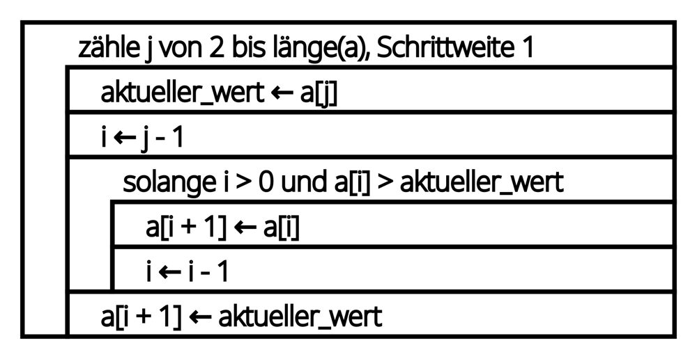
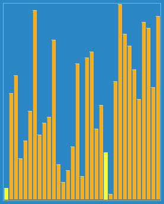
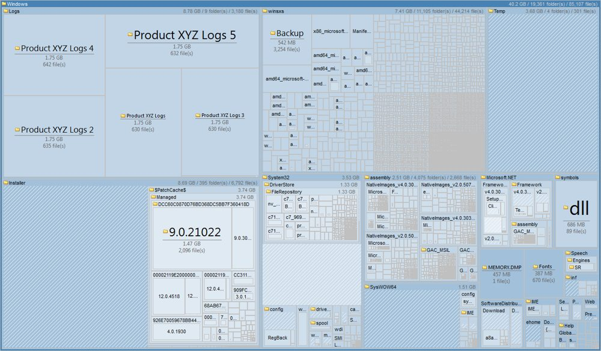
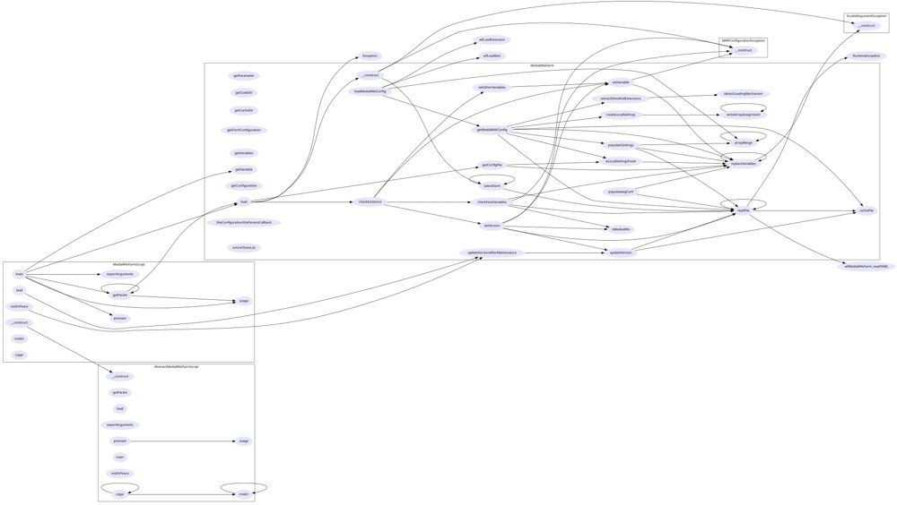
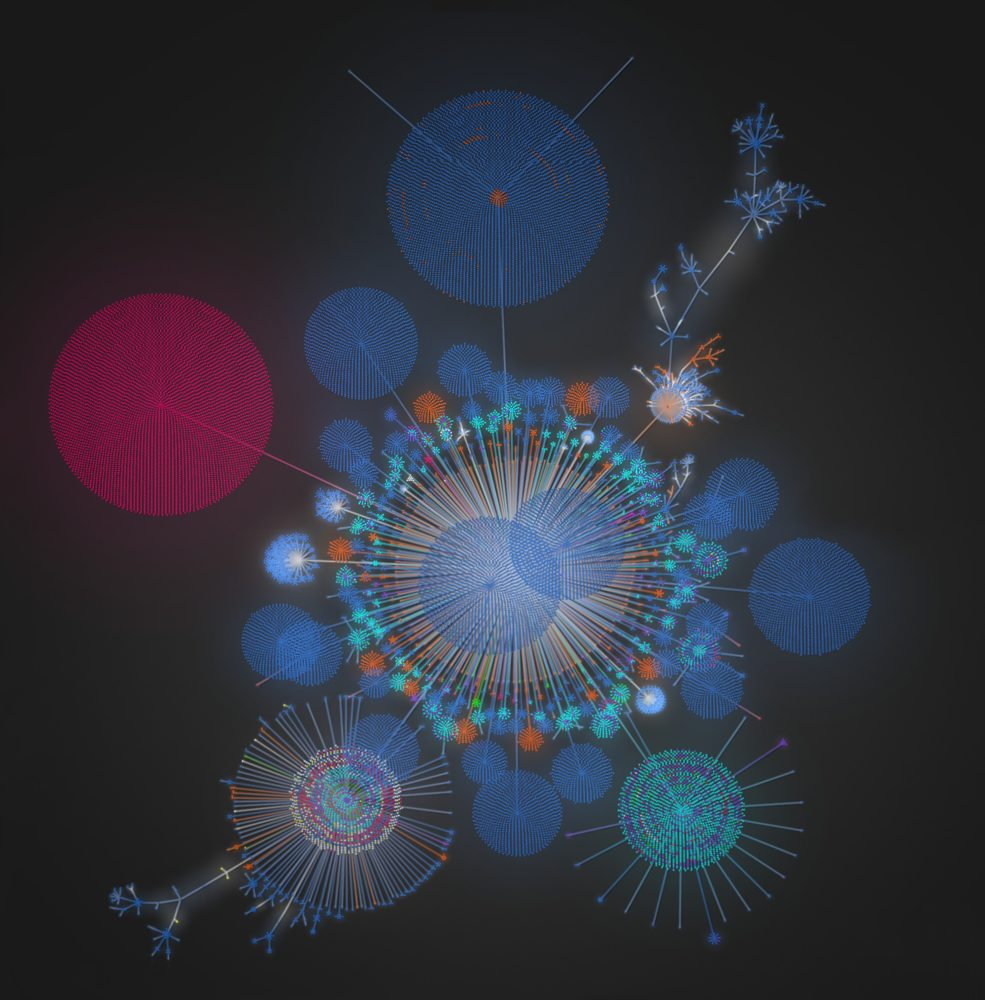
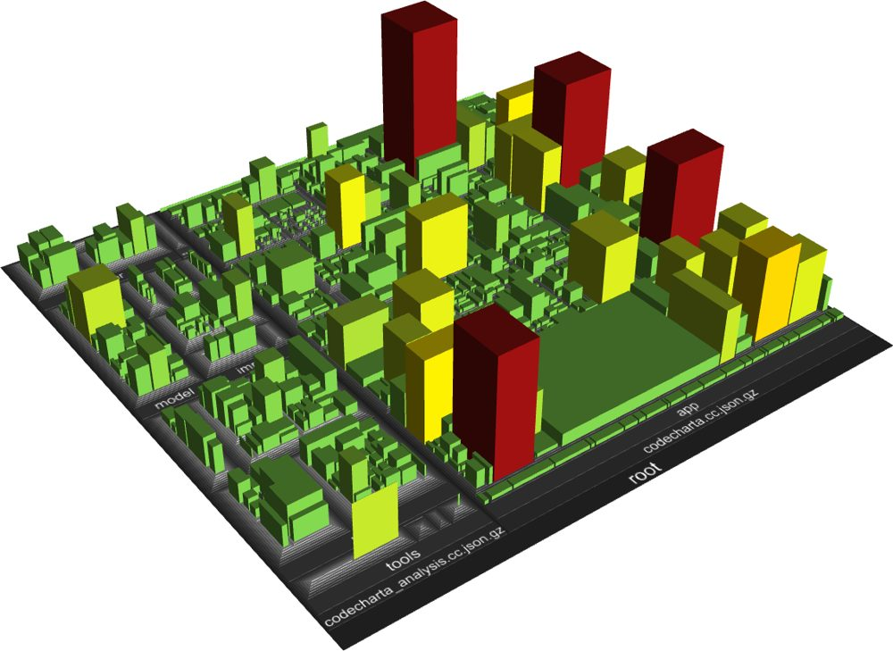
同一把尺子量所有系统
| 系统 | ① 存储 | ② 编辑 | ③ 呈现 | ④ 运行可见 | 主要领域 | 结局 |
|---|---|---|---|---|---|---|
| VisiCalc / Excel | 单元格网格 | 公式 | 表格 | 即时重算 | 办公/财务/分析 | 最大规模的终端用户编程 |
| Cornell Program Synthesizer | 树 | 节点/模板 | 文本 | 部分 | 教学 | 停用，思想被继承 |
| Interlisp / paredit | 文本(S式) | 节点 | 文本 | — | Lisp 社区 | 小众但长寿 |
| LabVIEW | 图 | 连线 | 数据流图 | 有 | 测控 | 领域标准 |
| Max / Pure Data | 图 | 连线 | 补丁图 | 实时 | 音频/艺术 | 领域标准 |
| Scratch / Blockly | 树 | 拖拽 | 积木 | 有 | 入门教育 | 大规模成功 |
| JetBrains MPS | 模型 | 投影 | 混合 | — | 工业 DSL | 稳定小众 |
| Unison | 哈希树 | 文本→解析 | 文本 | — | 通用 | 仍在发展 |
| Darklang Classic | 树 | 结构(Fluid) | 文本 | 有 | 后端 | 2024 年回到文本 |
| Cirru / Calcit | 树快照(Cirru EDN) | 树编辑器 → Agent CLI | 自动布局积木 → 命令行视图 | 热替换 | 个人/小团队 Web 应用 | 2025–26 年弃用树编辑器，保留树存储 |
| gofmt / Prettier | 文本 | 文本 | 规范文本 | — | 通用 | 普及 |
| LSP / tree-sitter | 文本 | 文本+结构命令 | 文本 | — | 通用 | 普及 |
| Hazel | 树 | 结构(带洞) | 文本样式 | 实时 | 研究/教学 | 研究前沿 |
| Python Tutor | 文本 | 文本 | 文本+堆栈图 | 逐步 | 教学 | 教学常用 |
| CodeCity / Gource | 文本 | — | 3D/动画 | 历史 | 分析/展示 | 演示多、日常少 |
| 火焰图 | — | — | 层叠条形 | 采样 | 性能分析 | 普及 |
| Jupyter / Observable | 文本单元 | 文本 | 文本+结果 | 实时 | 数据/科学 | 普及 |
| OpenRewrite / Semgrep / Mergiraf | 文本 | 规则化改写 | 文本 | — | 大规模维护 | 工业中普及 |
| Haystack 等画布 IDE | 文本 | 文本+AI | 无限画布 | — | 通用 | 早期 |
| Kiro / Spec Kit（规格驱动） | 文本+规格 | 自然语言→AI | 规格/任务清单 | — | 通用 | 2025 年兴起 |
| DeepWiki 等 AI 文档图 | 文本 | — | 自动生成文档与图 | — | 理解代码库 | 2025 年兴起 |
| Unreal 蓝图 / ComfyUI / n8n | 图 | 连线 | 节点图 | 有 | 游戏/AI 流程/自动化 | 快速增长 |
读表的方法：凡是动了“① 存储”的方案，都要为整个工具生态（diff、合并、评审、搜索、复制粘贴、聊天里贴代码）付出重建成本；只动“② 编辑”和“③ 呈现”、存储仍是文本的方案，普及速度明显更快。这一点是第三部分第一条规律的来源。
文本是所有工具的公共接口：版本控制、diff、grep、邮件、论坛、代码评审，以及如今大模型的训练数据。改存储格式等于退出这个网络，要支付“生态税”。
案例：Darklang、Unison、Intentional Software 的经历成功的结构化不是取代文本，而是藏到文本底下：后台解析、前台仍是文本。格式化器本质上就是投影式编辑的胜利——文本成了语法树的规范视图。
案例：paredit → LSP → tree-sitter → Prettier结构编辑追求“随时合法”，而人的思考大量发生在不合法的中间状态。谁能让“未完成”也有意义，谁就能缓解这对矛盾。
案例：Waters 1982、Berger 2016 的删除/选择问题、Hazel 的类型洞当领域本身就是流（信号、音频、着色器、数据管线）、用户不是职业程序员时，图形与结构胜出；通用编程中撞上规模天花板。
案例：LabVIEW、Max、蓝图、ComfyUI 对比通用可视化语言结构化界面降低入门门槛，但优势在转向文本后消失；它适合当入口，不适合当阶梯本身。
案例：Weintrop & Wilensky 2019日常使用的可视化都是“一个高频问题、零配置”：火焰图回答热点在哪，git 图回答分支怎么合，调试器回答变量是多少。宏大的全景视图常常没有人每天需要。
案例：Merino 等：62% 无评估；火焰图与 CodeCity 的对比实时编程的演示极有感染力，但需要语言、运行时、编辑器三者同时配合，产品化成本巨大，多数停在原型或缩回研究。
案例：Bret Victor 的演讲、Light Table、Eve（2014–2018）、Dynamicland每当输入设备或交互范式变化（光笔、鼠标、网页、触屏、大模型），同一批想法会换个名字重来一遍，并带回上一轮的一部分成果。
案例：1960s Sketchpad → 1980s 语法制导 → 2000s MPS → 2010s 实时编程 → 2020s AI已经发生的六件事
- 2023–24大模型巩固了文本
模型以文本训练、以文本输出。Darklang 明确把“代码生成的世界”列为放弃结构编辑器的理由之一。
- 2024–26两种相反的退出方式
Darklang 移除结构编辑器，存储改回文本、接入 LSP；Calcit 在 2025–26 年弃用人用的树编辑器（文档理由是转向 LLM 生成代码的工作流），但保留树存储，把编辑改成给智能体调用的结构化命令，带 dry-run 与版本守卫。前者放弃了树，后者只放弃了“人手编辑树”。
- 2023–25智能体在后台大量使用结构
用 tree-sitter 生成仓库地图挑选上下文，用语言服务器做跳转、重命名和诊断，用测试和类型检查做反馈回路。结构没有消失，它成了 AI 的工具。
- 2024类型洞成为 AI 的上下文
Hazel 团队（OOPSLA 2024）让语言服务器告诉模型“洞”的类型和上下文，类型定义对补全质量影响最大，并提出给 LSP 加 ChatLSP 扩展。
- 2025约束解码进入代码生成
PLDI 2025 等工作在解码时用语法和类型约束模型输出，显著减少编译错误。“生成过程只能产出合法树”——这正是 1970 年代语法制导编辑器的理想，换了一个执行者。
- 2023–26节点图在 AI 流程里复兴
ComfyUI、n8n、Dify 等用连线图编排模型与工具，并开始出现由 AI 生成和修改节点图的助手（如 ComfyUI-Copilot）。
证据：Darklang · Calcit 结构编辑器文档 · Typed holes + LLM（OOPSLA 2024） · Type-Constrained Code Generation（PLDI 2025） · ComfyUI-Copilot
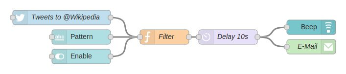
AI 带出来的新尝试，以及它们在重复谁
把新方案放回历史坐标里看：几乎每一个都对应一个旧想法，只是执行者从人换成了模型。
| 新方案 | 做了什么 | 对应的旧想法 | 变化在哪 |
|---|---|---|---|
| 规格驱动开发（Kiro、GitHub Spec Kit、Tessl，2025） | 先写需求、设计与任务清单，再由智能体生成和更新代码；规格成为主要编辑对象 | Intentional Programming 的“意图树”、文学化编程 | “意图”第一次有了能自动落地为代码的执行者 |
| 按语法与类型约束的解码、ChatLSP | 生成时只允许合法语法或类型，或把类型洞的上下文喂给模型 | 1970 年代的语法制导编辑器、Hazel 类型洞 | 约束作用在生成器上，人不再为“随时合法”付出粘滞度 |
| 智能体的结构化工具（LSP / tree-sitter 封装为工具、MCP 服务） | 重命名、跳转、按符号读取、结构化替换 | paredit、IDE 重构、结构编辑器的命令集 | 命令的使用者从键盘变成智能体 |
| AI + 确定性改写（OpenRewrite 配合 LLM、AI 生成 codemod） | 模型写改写规则，规则在无损语义树上确定地执行 | Coccinelle、程序变换系统 | 规则的编写成本大幅下降，执行仍可审计 |
| 下一处编辑预测（Copilot NES、Cursor Tab 等） | 根据最近的修改预测下一处要改的位置和内容 | 结构化重构中的“相关修改”传播 | 不需要显式的结构模型，靠统计学习 |
| 画布 IDE（Haystack，2024） | 把函数放在无限画布上，按调用关系排列，AI 辅助导航与编辑 | Code Bubbles、Code Canvas（2010） | 布局与关联由 AI 自动维护 |
| 草图即程序（tldraw Make Real，2023） | 在画布上画界面草图，模型生成可运行的网页 | Sketchpad、RAND GRAIL、Pygmalion | “画出来就能跑”第一次在通用场景可用 |
| AI 生成的代码库文档与图（DeepWiki，2025） | 为任意仓库自动生成架构说明与图示，可追问 | SeeSoft、CodeCity 等全景可视化 | 按需生成、能对话，绕开“没人维护”的问题 |
| 节点图 + AI（ComfyUI、n8n，及其 AI 助手） | 模型生成或修改节点图 | LabVIEW、Max/Pd | 图由 AI 搭建，人在图层面审阅 |
| 可塑软件（Ink & Switch，2025 文章） | 主张让用户借助 AI 改造自己的工具 | Smalltalk、HyperCard、Glamorous Toolkit | “为自己造工具”的成本可能降到普通用户可承受 |
这些新方案大多还在早期，采用规模和效果缺少独立评估；视频中只描述它们做了什么、对应什么，不对效果下结论。
证据：Martin Fowler：SDD 工具比较 · GitHub Spec Kit · OpenRewrite LST · Moderne：LST + 生成式 AI · Mergiraf（LWN） · Haystack · tldraw Make Real · DeepWiki 介绍 · Ink & Switch：Malleable software · Excel LAMBDA
八个判断，各附可信度与观察指标
历史上结构编辑失败的主因是人手编辑的粘滞度。当大部分修改由智能体发起，粘滞度的代价消失，而“只产出合法修改”的价值上升。结构化编辑原语（重命名、移动、提取、填洞）会以工具接口的形式暴露给 AI，而不是以快捷键的形式暴露给人。
观察指标：智能体工具集中 AST/LSP 操作的比例；约束解码进入主流产品AI 让生成变便宜，审核变成稀缺环节。需要的是回答具体问题的视图：这次改动影响了哪些调用者、行为差异在哪、为什么测试变了。正好避开了规律 6 的陷阱。
观察指标：代码评审工具中出现语义 diff、影响面图、执行轨迹对比可塑开发（Glamorous Toolkit）主张“为每个问题造一个检视器”，过去成本太高；AI 可以在几秒内为当前问题写一个专用视图，用完即弃。全景式可视化的“没人每天需要”问题因此被绕开。
观察指标：IDE/智能体输出中内联图表、自动生成的架构图被频繁使用人和模型都读写文本，网络效应在 AI 时代更强。但文本越来越由格式化器、代码生成和约束解码产生，存储层面的“唯一真相”逐渐是树与类型信息，文本是它的规范视图。
观察指标：格式化与 lint 全自动化；仓库中手写格式差异趋近于零智能体大量工作在半成品状态：留洞、占位、待实现。Hazel 式的“有类型的洞”可能从研究走向工业语言与工具协议。
观察指标：LSP 或主流语言增加对洞/占位的正式支持粗粒度流程用图（人好审），细粒度逻辑用代码（AI 好写）。图中节点由 AI 生成和改写，人主要在图层面审阅。
观察指标：AI 流程平台用户规模；节点内嵌代码的比例规格驱动开发让人主要编辑需求、设计和任务清单，代码由智能体维护。这是 Intentional Programming 想法的回潮；它能否持久，取决于规格与代码长期保持一致的成本。
观察指标：规格文件在仓库中的比例；规格与代码不一致导致的返工报告Calcit 改由智能体通过结构化命令编辑树存储，说明这条路在个别项目中可行；但训练数据和工具生态仍以文本为主，能否推广还没有证据。
观察指标：模型对 MCP/工具化代码库操作的熟练度；此类语言的生态增长分集建议
- 上集 · 调查序章四维框架；五波尝试（每波“押注—得—失—留下”）；可视化四次转向。约 22 分钟。动画：同一段代码在文本/树/积木/连线图之间变形；SeeSoft 与排序赛跑复刻。
- 中集 · 对比与规律对比表逐行展开；八条规律，每条配一个正例一个反例。约 20 分钟。动画：系统在“存储—呈现”平面上的分布图；粘滞度演示（同一修改在文本与结构编辑器中的步数）。
- 下集 · AI 与预测现状六件事；新方案对照表；八个判断与观察指标；结尾回到“文本还是树”。约 18 分钟。
已确认：三集；Cirru / Calcit 的关键尝试并入对比表、第四波和 AI 现状，与其他系统同等处理，只陈述可查证的事实。写稿时逐条核对原文，标“待核”的优先处理；Calcit 编辑器截图可由你提供或从仓库 README 引用。
前史与配图素材
1947 年冯·诺依曼的流程图、1963 年 Sketchpad、1968 年 NLS 与 GRAIL 作为开场素材；Smalltalk 浏览器、积木与数据流的截图用于第一部分。
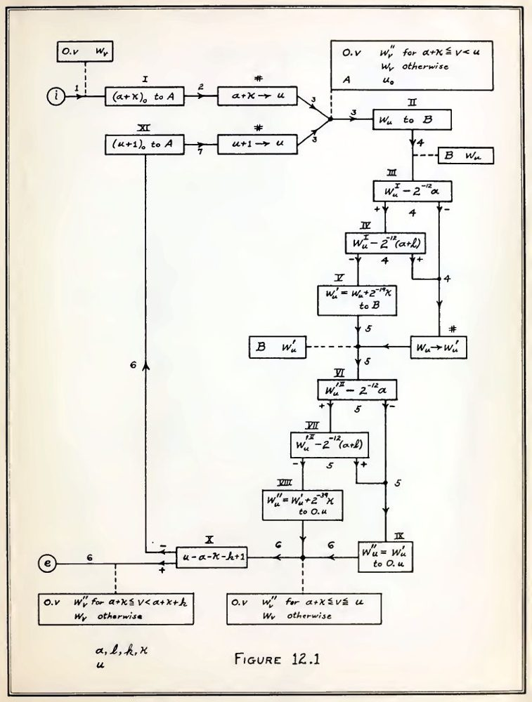
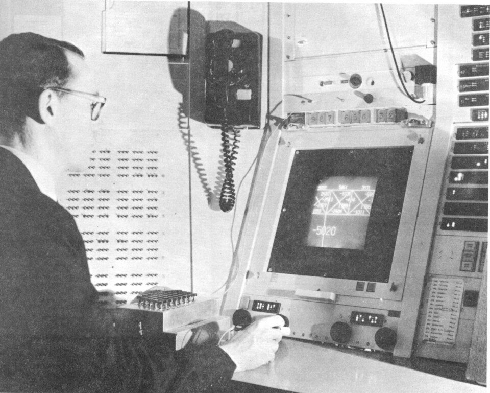
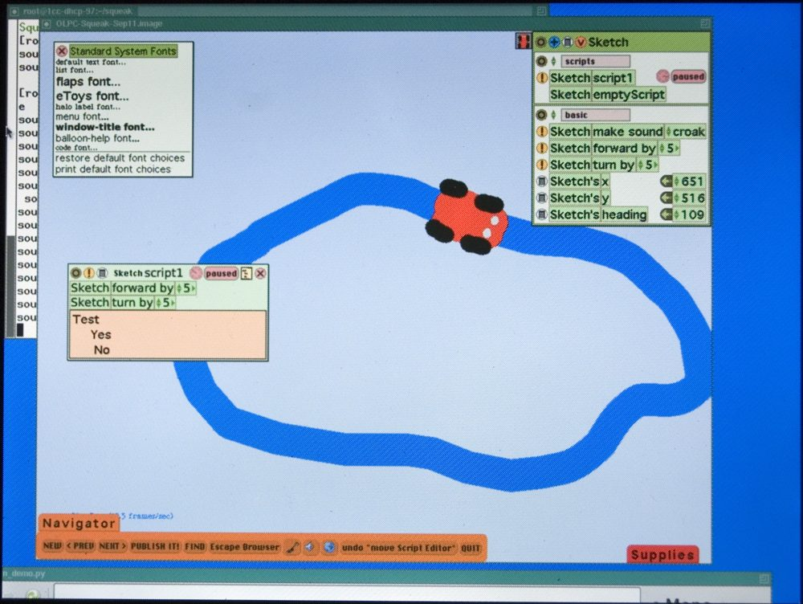
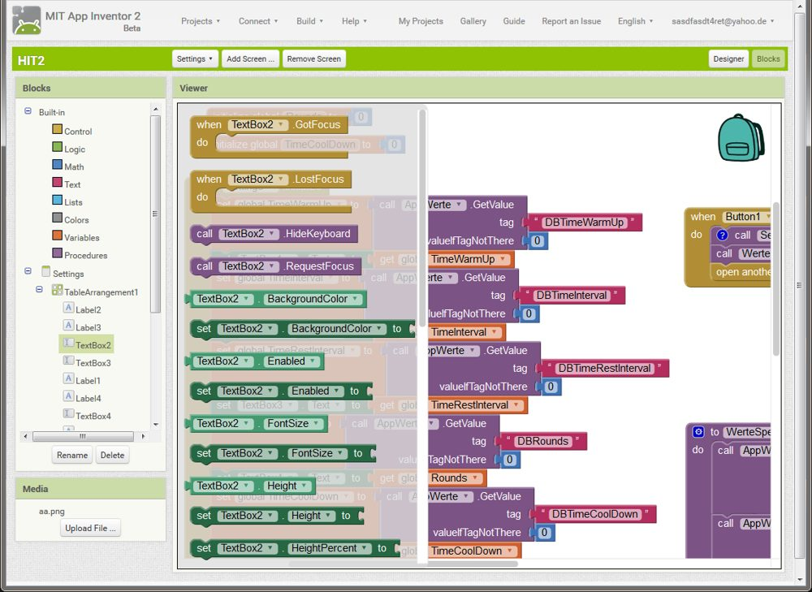
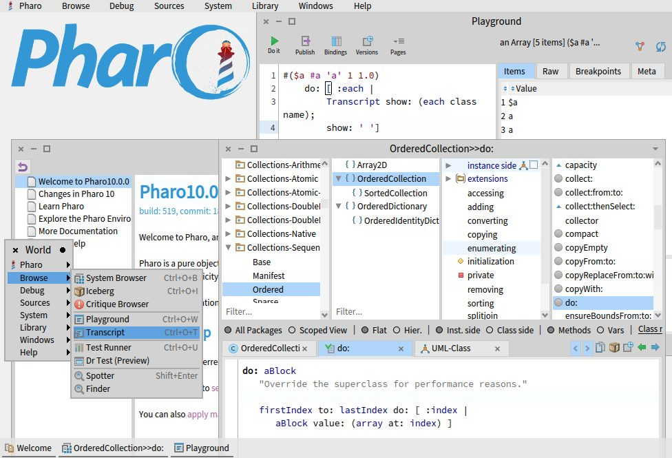
Structure editor（Wikipedia） · Waters 1982 · Berger et al. FSE 2016 · Petro & Porubän SLATE 2024 · Weintrop & Wilensky 2019 · Merino et al. 软件可视化评估综述 · 认知维度 · Darklang 状态更新 · Typed holes + LLM（OOPSLA 2024） · Type-Constrained Code Generation · ComfyUI-Copilot · Hazelnut · Pantograph · 结构编辑器清单 · Diehl 软件可视化讲义 · Light Table · Dynamicland · calcit-lang/calcit · calcit-lang/editor · cirru.org
图片：Wikimedia Commons，自由授权，作者与授权见各图说明。